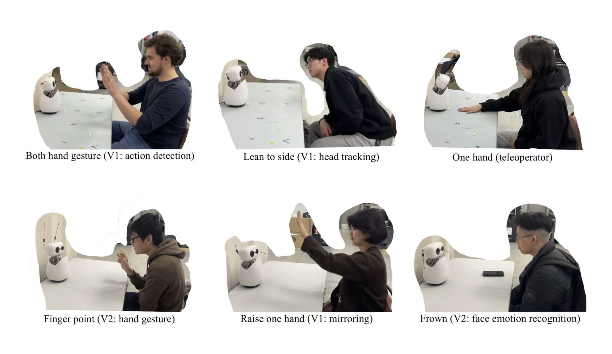
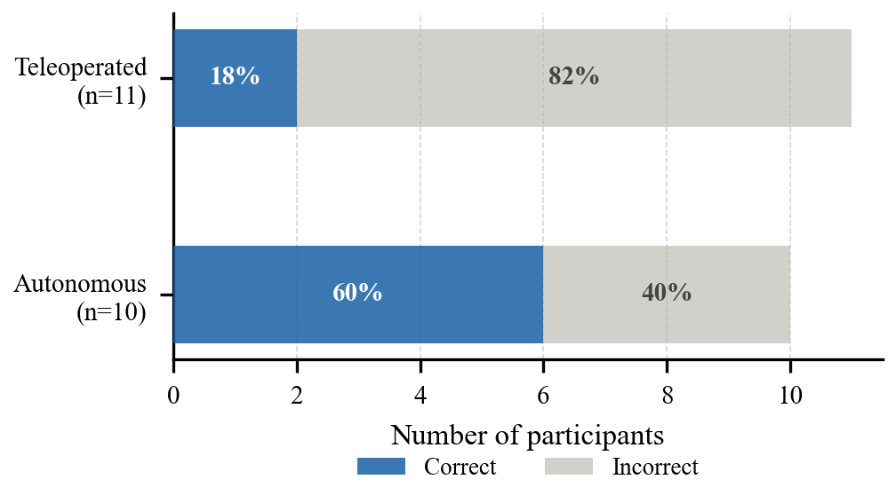
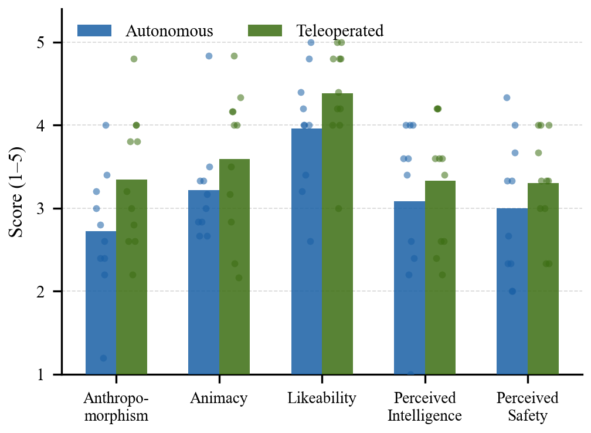

Non-verbal interaction is a fundamental component of natural human communication, yet in human-robot interaction it remains underexplored relative to language-centric approaches. We present a real-time non-verbal interaction system for Reachy Mini, a compact humanoid robot, that perceives and autonomously responds to human emotion and body motion.
The system operates through four concurrent layers. First, a continuous mirroring layer tracks head orientation and arm elevation in real time, animating the robot's head and antennas to maintain social presence as a default background behaviour. Second, a hand gesture recognition layer maps discrete hand signs directly to emotional responses. Third, an action detection module segments continuous pose streams into discrete gesture clips; each clip is processed by a body motion captioning module and a facial emotion recognition module, whose outputs are jointly forwarded to a locally-hosted large language model that selects the most appropriate response from a library of 81 pre-recorded emotional expressions. Fourth, a priority scheduler arbitrates between all three reactive channels, ensuring coherent robot behaviour. The system runs fully offline on consumer hardware.
To support evaluation, we develop a teleoperation interface allowing a human operator to drive Reachy Mini's behaviors. We then conduct a Turing test-style user study in which participants freely interact with Reachy Mini using natural gestures and expressions, while the robot responds either autonomously or via teleoperation. Participants judge which condition they experienced and rate the naturalness of the robot's responses.

Top row, left to right: a participant performing a two-handed gesture triggering action detection (V2); leaning to the side with head tracking active (V2); a teleoperator controlling the robot with one hand (V2). Bottom row: a participant using a finger-point gesture for hand gesture recognition (V3); raising one hand while the mirroring layer tracks arm elevation (V2); exhibiting a frown expression detected by the facial emotion recognition module (V3).
| Pipeline | Condition | Correct | Total | Accuracy |
|---|---|---|---|---|
| V2 | Autonomous | 4 | 5 | 80% |
| V2 | Teleoperated | 1 | 4 | 25% |
| V3 | Autonomous | 2 | 5 | 40% |
| V3 | Teleoperated | 1 | 7 | 14% |
| V2 + V3 | Autonomous | 6 | 10 | 60% |
| V2 + V3 | Teleoperated | 2 | 11 | 18% |

Participants in the Teleoperated condition identified the correct control mode at only 18% (2/11), well below the 50% chance baseline, indicating a strong autonomy-assumption bias. Participants in the Autonomous condition performed closer to chance at 60% (6/10).
| Condition | Anthropomorphism | Animacy | Likeability | Intelligence | Safety |
|---|---|---|---|---|---|
| Autonomous | 2.72 | 3.22 | 3.96 | 3.08 | 3.00 |
| Teleoperated | 3.35 | 3.59 | 4.38 | 3.33 | 3.30 |

Bars show condition means; overlaid points show individual observations (N=21). Teleoperated interactions received higher scores across all subscales except Perceived Safety, though differences should be interpreted as descriptive trends given the pilot study sample size.